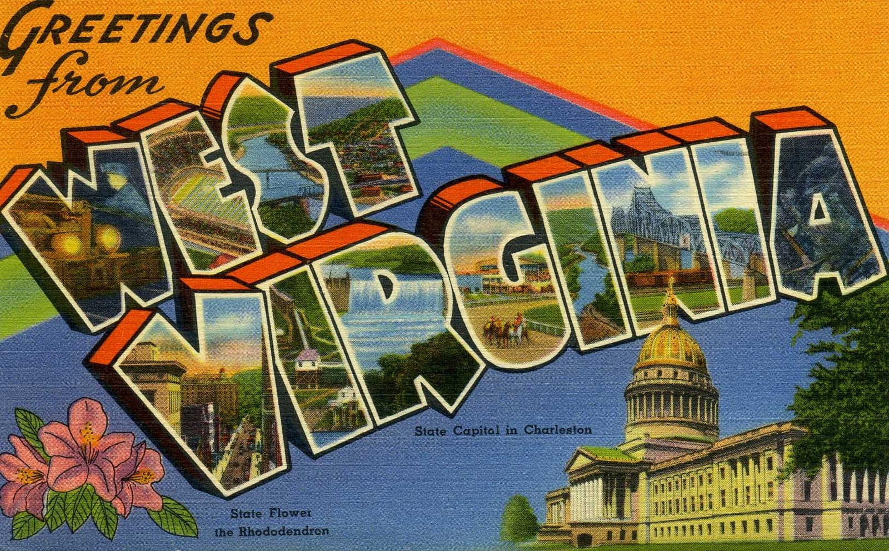
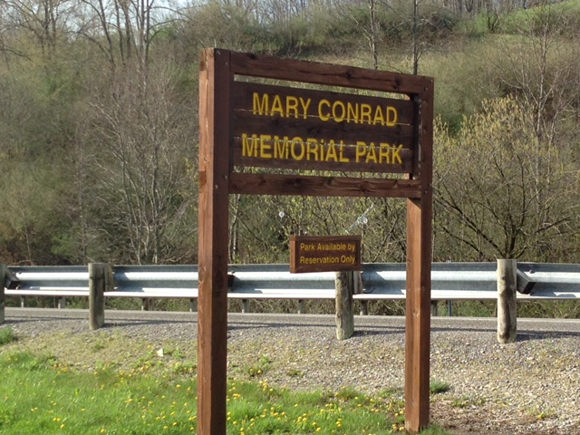
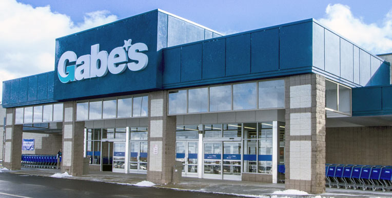

Day One
Thursday
September 10, 2015
Staying at The Hall
For those arriving early, you’re welcome to stay at the Hall family farm house. Ian’s mom Lee will be around and will likely make you a smoothie if you ask nicely. Get settled in, go for a walk, and enjoy the West Virginia scenery before the big weekend kicks off.
If you’re staying at Stonewall Resort, check-in opens Thursday afternoon. Great time to explore the lake, grab dinner at the resort, and get a good night’s rest before the festivities begin.

Day Two
Friday
September 11, 2015
Exploring & Rehearsal
Friday is your day to explore! Check out all the fun things to do in the area. Visit the Hall Farm, grab a hot dog at T&L, or take a dip at Stonewall Jackson Lake.
In the evening we’ll have a rehearsal at Mary Conrad Park followed by a dinner at the resort. Details will be shared with the wedding party directly — everyone else, enjoy your Friday night in WV!

Day Three
Saturday
September 12, 2015 — The Big Day!
3:30 PM — The I Do’s
The ceremony will be short and sweet, held near the water at Mary Conrad Park. Mary Conrad Park is just a short drive from Stonewall Resort — take a left out of the resort, drive 1.9 miles, then turn right. It’s just past the gun range!
3:45 PM — Group Picture
Tuck in those shirts and fix that hair — group photo time! Smile big.
4:00 PM — 10:00 PM — Drinkin’ and Dancin’
BBQ, beer, blankets, lawn games, dancing, laughing, hugging — and everything else that makes a wedding great. Let’s celebrate!

Day Four
Sunday
September 13, 2015
The Slow Goodbye
Sunday is for sleeping in, grabbing breakfast, and saying your farewells. If you’re driving back north, consider stopping at some of the great spots along the way. Safe travels!
For those lingering an extra day — there’s still plenty of WV fun to be had. Check out our list of local recommendations.